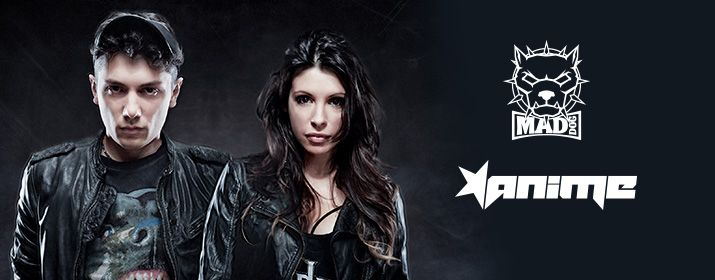

Mainstage: 22:00-23:00!
Filippo Calcagni alias Mad Dog ist Produzent und DJ der Hardcore Szene. Er startete
seine Karriere mit 16 Jahren mit den Hardcore Terrorists. Seit 2000 performt er als
Mad Dog. Seitdem erschienen viele erfolgreiche Hits, wie The Memory Disappears,
Dangerous, Enter The Time Machine, Here Comes The Madness, und er arbeitete mit
vielen legendären Künstlern wie Nosferatu, Noize Suppressor, Tommyknocker and
The Stunned Guys.
2011 erschien sein erstes Album A Night Of Madnessmit den Tracks A Night Of
Madness, Bassdrum Bitch, Hardcore Machine(Mad Dog & AniMe) und Game Over.
Er performte bereits auf den größten Hardcore Festivals, wie Thunderdome,
Defqon.1, Masters of Hardcore, Decibel, Dominator und Syndicate.
Barbara Palermo alias AniMe ist ebenfalls Hardcore Produzentin und DJane. Sie
begann 1997 sehr jung ihre Karriere in Clubs in Mailand. AniME performte bereits in
ganz Europa, Mexiko, Chile, Japan und auf den größten Hardcore Festivals, wie
Thunderdome, Masters of Hardcore, Defqon. 1, The Qontinent, Dominator, Q-Base,
Decibel und vielen mehr.
2011 war ihr Track Hardcore Machinein Zusammenarbeit mit Mad Dog ein voller
Erfolg. Das italienische Pärchen gehört nicht nur privat, sondern auch musikalisch
zusammen.